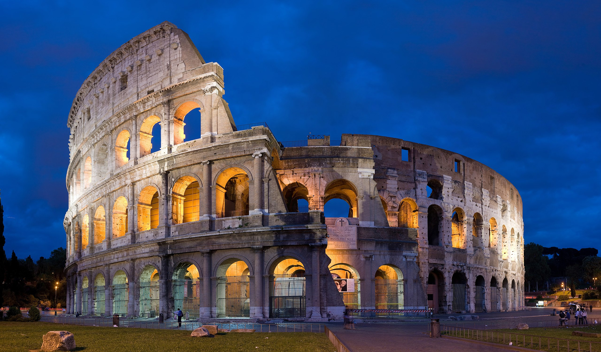

|  |
The Colosseum is an oval amphitheatre in the centre of the city of Rome, Italy, just east of the Roman Forum. It is the largest ancient amphitheatre ever built, and is still the largest standing amphitheatre in the world today, despite its age. Construction began under the emperor Vespasian in 72 and was completed in 80 AD under his successor and heir, Titus. Further modifications were made during the reign of Domitian. The three emperors that were patrons of the work are known as the Flavian dynasty, and the amphitheatre was named the Flavian Amphitheatre by later classicists and archaeologists for its association with their family name.
The Colosseum is built of travertine limestone, tuff (volcanic rock), and brick-faced concrete. The Colosseum could hold an estimated 50,000 to 80,000 spectators at various points in its history having an average audience of some 65,000; it was used for gladiatorial contests and public spectacles including animal hunts, executions, re-enactments of famous battles, and dramas based on Roman mythology, and briefly mock sea battles. The building ceased to be used for entertainment in the early medieval era. It was later reused for such purposes as housing, workshops, quarters for a religious order, a fortress, a quarry, and a Christian shrine.
Although substantially ruined because of earthquakes and stone-robbers, the Colosseum is still an iconic symbol of Imperial Rome and was listed as one of the New7Wonders of the World. It is one of Rome's most popular tourist attractions and also has links to the Roman Catholic Church, as each Good Friday the Pope leads a torchlit "Way of the Cross" procession that starts in the area around the Colosseum.
The Colosseum is also depicted on the Italian version of the five-cent euro coin.